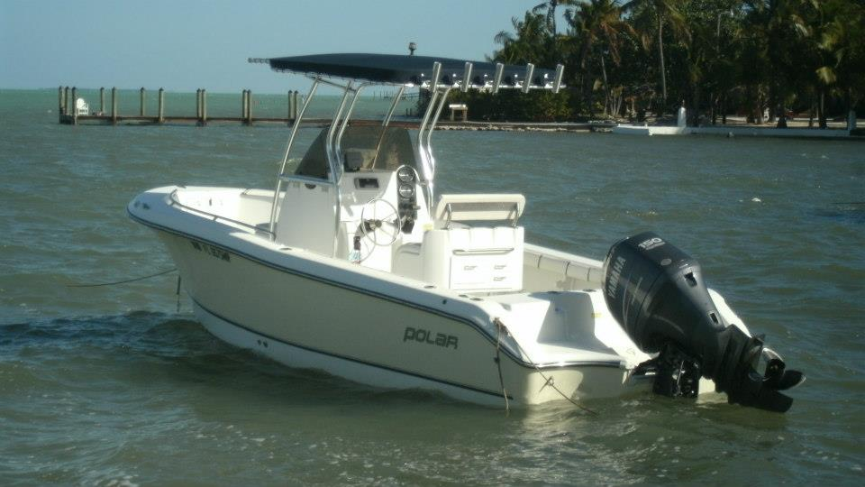

Medium
The fishing boats can get you to our great Florida Keys fishing spots by going under the Long Key Bridge, and you are fishing the Atlantic Ocean within 10 minutes of leaving our dock.
Medium


Medium
Our location at Long Key makes it easy to fish the bayside or the oceanside. Leaving from our dock, you can be on the Atlantic oceanside in minutes by going under the Long Key Bridge. The oceanside provides a huge variety of species of fish to catch. The bayside has the gamefish - bonefish, permit, redfish or catch tarpon on either side of the Long Key Bridge.